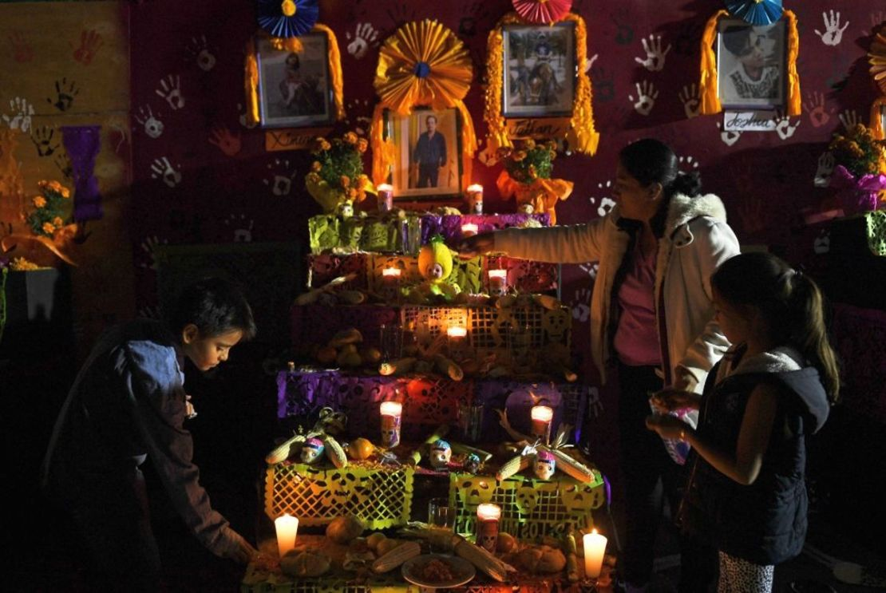
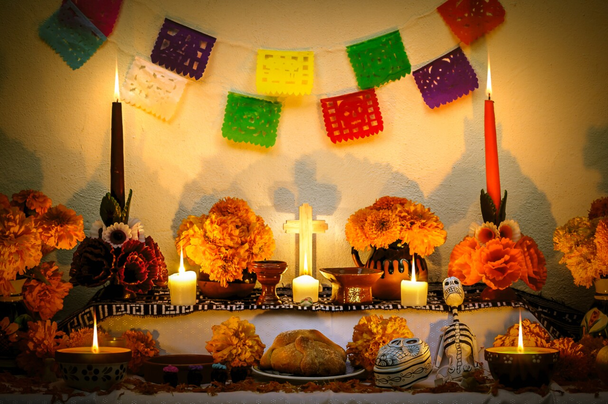
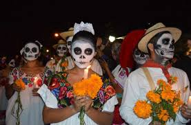

Tradiciones
El Día de Muertos es una celebración mexicana que honra a los seres queridos que han fallecido. Esta festividad se caracteriza por la construcción de altares, el uso de flores de cempasúchil, calaveras de azúcar y la creación de un ambiente lleno de colores y aromas que representan el regreso de los espíritus al mundo de los vivos.

Ofrendas
Las ofrendas son altares decorados con elementos que los difuntos disfrutaban en vida. Se colocan fotografías, alimentos, bebidas, y objetos significativos para recordar a cada ser querido. Las ofrendas suelen estar adornadas con flores, principalmente cempasúchil, que guían a las almas hacia el altar.

Imágenes del Día de Muertos
Las imágenes del Día de Muertos representan la riqueza cultural de México. Desde calaveras decorativas hasta papel picado, cada elemento tiene un significado especial. Estas representaciones visuales son una forma de celebrar la vida y la muerte, y son parte esencial de las festividades.

